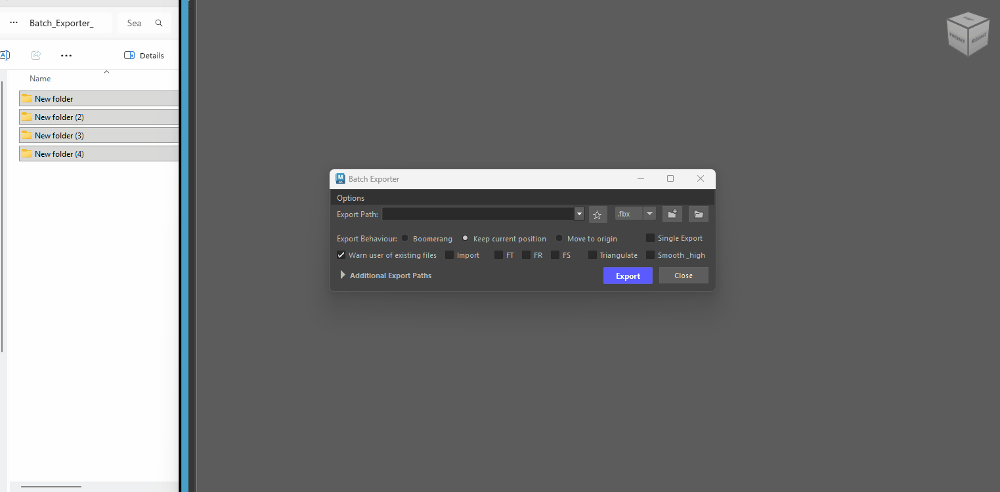
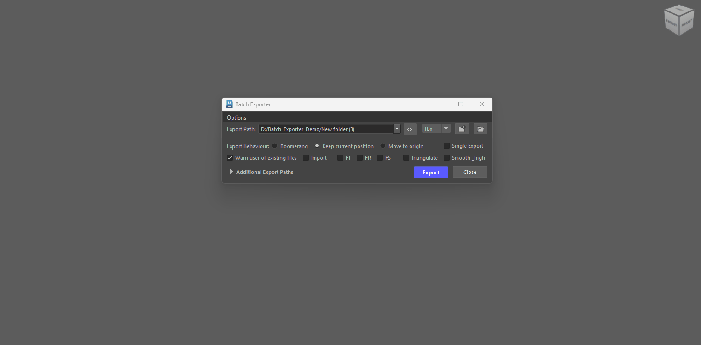
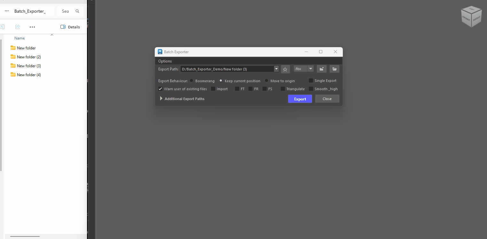
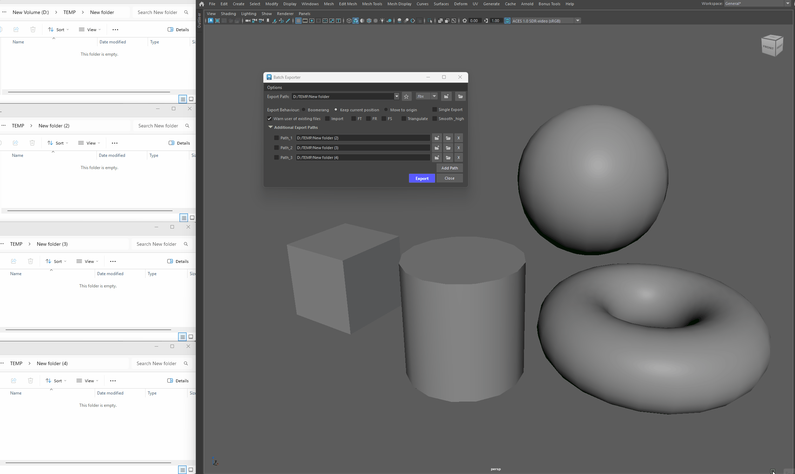
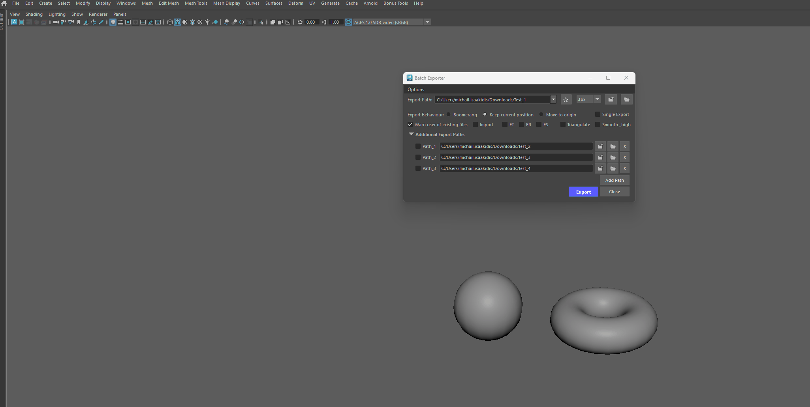
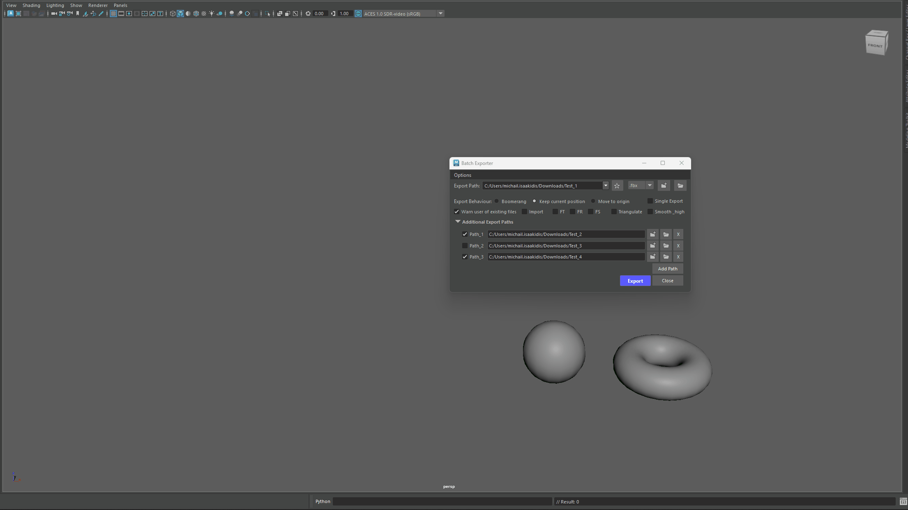

Breakdown¶
Stored Paths¶
The path field is a dropdown that remembers the folders you use. Paths are stored globally, so they persist across scenes and Maya sessions.
{kind=link}

How paths get stored¶
-
A folder is added to the top of the dropdown whenever you:
- Pick a folder through the browse dialog
- Type or paste a valid path and press Enter (or click away from the field)
- Drag and drop one or more folders from Explorer anywhere onto the tool window
- Use the path in an export / import / material creation
Pinned favorites (★)¶
-
Click the star button next to the path field to pin the current folder as a favorite.

Pinning Favorites - Favorites always stay at the top of the dropdown, marked with a gold star.
- Favorites never fall out of the list and survive "clear all recent paths".
- Favorites are protected from deletion — unpin them first (click the star again) to remove them.
{kind=link}
Missing folder detection¶
-
Every time you open the dropdown, the tool checks whether each stored folder still exists on disk.

Missing paths - Folders that no longer exist (renamed, moved, or deleted) are shown with a faint red background.
- Hovering the entry shows the full path with a "folder no longer exists" note.
- The check runs live on every click, so changes on disk show up immediately — no restart needed.
-
The path field itself also turns red while it contains an invalid path, and clears back to normal as soon as the path is valid (or the field is emptied).
{kind=link}
Removing stored paths¶
-
All removal shortcuts are on the folder (Select Folder Path) button:
- Ctrl + Click Delete all recent paths (pinned favorites are kept)
- Ctrl + Shift + Click Remove only the path currently shown in the field
Tip - Long Paths
- Long paths that don't fit in the field can be read in full by hovering the dropdown entry (tooltip).
Difference between Stored paths and Additional paths¶
-
Recent Paths (the dropdown) — just a memory helper. The tool remembers the last 10 folders you've used, plus any you've pinned as favorites (★), and offers them in the dropdown so you don't have to browse again. They're saved in Maya itself, so you see the same list in every scene. Picking one doesn't export anywhere — it just fills in the main Export Path for you.
-
Additional Export Paths (the drawer) — actual extra destinations. Each row is a folder your files can export to, with a checkbox to turn it on. Check two or more and your files go to all of them at once; check none and everything goes to the main Export Path. These are saved inside the scene file, so they come back when you reopen that scene (for more info on Additional Paths click here).
How to export¶
When batch exporting - the tool uses the Object's name as the file name. Let's see an example of the steps involved to export some files.
For our examples we will export using .fbx files as those files utilize the Smooth upon export feature of the exporter (other file formats do not utilize this). We will be using .Marmoset Toolbag to view the exported results.
{kind=link}
Here we have 3 objects (Cube_01, Cylinder_01, Torus_01).
The first thing we need to do when opening the tool, is select a path by clicking on the Select Folder Path button.
{kind=link}
The path chosen was C:/Users/mike/Downloads/test.
Clicking on the Open Folder Path in Explorer will open that path in explorer.
{kind=link}
{kind=link}
Now that the path has been set, let's select our objects and Click on the Export button.
{kind=link}
{kind=link}
We can see our 3 files exported in the selected path and each file has the same name with the associated object in Maya.
Here are the files in Marmoset.
{kind=link}
Exporting with Smooth .fbx files¶
If you expand the Options menu you will see that by default the Smooth exported .fbx files checkbox is checked.
This means that any object selected that is exported with smooth preview on (by just hitting 3 on your keyboard), it will be subdivided upon export.
Let's use the same meshes as before and select our 3 objects. Here they are with smooth preview turned off.
But let's enable Smooth Preview (keyboard shortcut 3), and Export.
{kind=link}
Here are the results in Marmoset.
{kind=link}
As you can see Smooth Preview objects were subdivided upon export.
How to Control Smooth Subdivision¶
You can control the amount of subdivision by using the Page UP /Page Down buttons on your keyboard when Smooth Preview is on.
Alternatively you can open the Attribute Editor and under the Shape tab, go to Smooth Mesh. There you can see the Smooth Mesh options.
By increasing the Preview Divisions number you increase the
Let's see what happens when we export our Cube_01 with 4 Preview Division Levels.
{kind=link}
{kind=link}
Our cube has a lot more subdivisions than before.
Info - Exporting with Smooth checkbox turned off
If you do not wish to have your objects subdivided upon export, just uncheck the Smooth exported .fbx files checkbox or alternatively ensure your smooth preview on your objects is disabled (keyboard shortcut key 1).
Exporting with Smooth and Triangulate options¶
If for some reason you also want to export your objects subdivided and triangulated, checking the Triangulate checkbox will do just that.
{kind=link}
For this example our Cube_01 is not smoothed but the other objects are. Let's see the results once again.
{kind=link}
All of our Objects have been triangulated. Those will Smooth Mesh Preview on were also Smoothed upon export.
Info
Triangulation happens after our objects have been smoothed.
Exporting with Smooth_high .fbx files¶
The Smooth_high checkbox automatically sets the smoothing preview on our object based on their naming convention.
- If the name of our object contains the "_high" then, the smooth preview is enabled.
- If the name of our object contains the "_low" then, the smooth preview is disabled.
This is done to ensure our _high and _low poly object are exported correctly.
Info - Exporting groups with _high
If you want to export groups that have objects that contain the name _high or _low in them, the tool will ensure each child object from that group gets the treatment it needs in order to be exported correctly.
So if you have loads of baking groups, you can group all of those in a single group and export that as a single file or you could bundle up your _high and _low in two separate groups and export those.
Either way Marmoset will be able to read those files and import them correctly for Baking.
In this next example let's see what the Smooth_high checkbox does. For this we changed the naming of our files to include the words _low and _high.
{kind=link}
We set the Smooth Mesh Preview for these object to be:
- On for the Cube_01a_low.
- Off for the Cylinder_01a_high.
However, we want to export our files in the opposite fashion (not smoothed for the low and smoothed for the high).
The tool handles that and sets the correct Smooth Preview settings based on the naming convention.
Let's export those 2 files and see what we get.
{kind=link}
Operation after Export.
The Smooth Mesh Preview settings were automatically changed because of the naming convention.
- _low mesh had smooth mesh preview set to 1
- _high mesh had smooth mesh preview set to 3
Results in Marmoset.
{kind=link}
As expected the _low was not smoothed and the _high was.
If Triangulate checkbox is also enabled the tool will skip the _high and only triangulate anything else selected.
Remember - _low objects with Smooth_high
When the smooth_high checkbox is checked, objects with _low in their name will also get their smooth preview disabled.
{kind=link}
{kind=link}
Exporting Groups using Smooth_high¶
The tool also works with selected groups.
When a group is selected, the tool will look for all objects within that group and perform the same operations as illustrated on our previous examples.
{kind=link}
Here's the result in the viewport after we clicked the Export Button.
The Smooth Mesh Preview is restored based on the naming convention of each object.
{kind=link}
The result in Marmoset.
{kind=link}
Exporting Decimated Objects¶
Info - Exporting Decimated objects from Zbrush
If the Smooth_high chechbox is checked and you have a decimated hp mesh that you imported from Zbrush, then the tool will export that object subdivided.
Because it's likely the object is triangulated smoothing that triangulated _high object will mess up your object when subdivided.
To ensure your _high mesh wont get subdivided upon export, simply include the following in the name of your high poly objects:
"_dm_high" or "_zb_high" or "_ZB_high" or "_DM_high"
The tool will skip the smooth_high process.
Example name of a high poly object: Chair_01a_dm_high
Additional Export Paths¶

-
The Additional Export Paths section lets you configure, save, and batch-export your assets to multiple directory destinations simultaneously in a single click.
-
Multi-Destination Batching: Check two or more additional paths to export your assets to all specified folders concurrently. If no additional path is checked, the main Export Path serves as the default target.

Exporting to different paths -
Scene-Persistent Memory: All paths and their active checkbox states are automatically stored in your Maya scene metadata (fileInfo). When you reopen the scene, your multi-export target configuration is instantly restored.

Loading up existing scenes with stored paths Info - Storing/Retrieving Paths in Scene
Every time you click on the Export or Close button, all paths already set will be temporarily stored in the scene.
Maya Scene needs to be saved in order for those paths to be permanently saved.
-
Opening a scene, will fill in all previously stored paths automatically. - (Automatically update the export paths when a new scene is opened) from the Options Menu needs to be checked.
-
If unchecked you can Ctrl + Click on the main -Select Folder Path button to retrieve all stored paths in your scene.
-
Alt + Click resets the Additional Export Path to its default state.
-

-
-
Visual Validation & Safety: Any non-existent or misconfigured export path is highlighted in red upon export or text edit, preventing failed batch operations before they start.

Invalid Path Warning -
Quick Navigation & Folder Browsing: Each individual path row includes quick-access buttons to browse for folders (📁) or open the destination directly in Windows Explorer (📂).
{kind=link}
{kind=link}
{kind=link}
Batch Import¶
To import multiple files at once simply enable the Import checkbox and click on the Select folder path button.
You will now get a new window that will allow you to select multiple files.
{kind=link}
Simply select the files you want and click on the Import button.
{kind=link}
{kind=link}
Export Behaviors¶
Keep Current Position¶
The default option to export is Keep Current Position, which retains the position of your objects in the scene.
Boomerang¶
The Boomerang options, moves your objects to World Origin (0,0,0), exports and moves them back to their previous location.
{kind=link}
Result in Marmoset, all objects sit in world origin at (0,0,0).
{kind=link}
Tip - exporting modular sets
Using the Boomerang option is very useful when working on modular static meshes for Unreal Engine.
Unreal needs each file to be exported from the origin position (0,0,0).
The Boomerang operation will allow you to just do that without disrupting your workflow. This is not limited to modular sets but for any kind of static mesh you wish to export.
Combine this with Freeze Transforms and the tool will give you the distance from world origin.
This is very useful if you need to precisely position something in Unreal but need the pivot point of your static mesh to be at a certain position on your object.
{kind=link}
FT (freeze transforms) checkbox enabled us to see the distance from world origin.
{kind=link}
Move to Origin¶
Move to Origin will move your objects to the World Origin (0,0,0), export them and leave them there.
Freeze Transforms for groups¶
Warning - Freezing Transforms on group objects
When using any of the Freeze Transform options on a group node, it will only Freeze the transforms of the group (not the children).
Single Export¶
Link to Single Export documentation
Dockable¶
- The tool is dockable in the Maya UI.